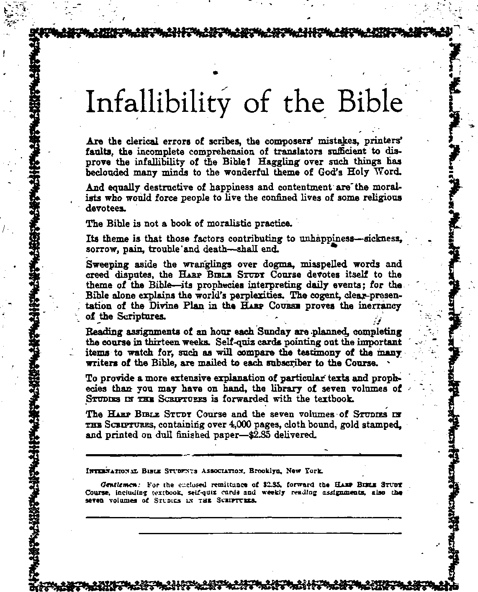

TRUTH
■jaff*
i’VORLD ' DYING
PSYCHOLOGY VS. MIND AND IMMORTALITY
A GLIMPSE OF i WORLD NEWS I BROADCAST
WHY MAN GROWS SICK AND DIES
50 a copy — $ 1.00,a.Ye ar
CfloiRdacand Rreiga_Countries $ 150
VoLV Bi-Weekly No. ISO * f April 23, 1924
a Journal of fact hope and, courage'
NE"V;
VORLD BEGINNING
f
Y«Ium ▼ Brooklyn, N.Y., Wedaf iiayt April 23, 1924 Naber 129
(Broadcast March 3 and 10 from Watchtower WBBB on a ware length of 244 metera, by the Editor)'
IN TH# First Baptist church of Minneapolis, Miss Christabel Pankhurst, daughter of Mrs. Emmeline Pankhurst, famous woman suffrage leader in England, made the declaration that “the world is going to pieces.” She does not profess to know how soon Christ is to come and establish His government upon the earth, but she thinks that He had better come right soon; for she cannot see how the present order of things can hold out much longer.
The World War, the Japanese earthquake, the Jews migrating to Palestine, and the huge preparations for the coming worst war ever known, are, according to Miss Pankhurst, distinct signs of the kingdom of peace under Christ. “The Bok peace plan,” she says, “will never prevent war; there is no human way to do it.” Her thought is that silly- women and foolish men, in seeking truth in fancy religions, which have not the Bible for their foundation, are dancing the dance of death—playing with death, as it were. -
In speaking of the morals of the day, Miss Pankhurst said: “It is hard to be a boy or a girl now; for they have a slippery slope to travel The candle of Gentile civilization is burning down; there will be the last dare-up, and then shall come the end of the age.” -
l%e New Reformation .
MB. Gnsjrw Fham-k, editor of The Century Magazine, recently before the Methodist Ministers’ Association of New York, told that august body that the world needed a new reformation, that it was ripe for a new Martin Luther. He thought that Modernism had been an intellectual movement of negative criticism, but that it should become a positive movement and nail its theses to the doors of our churches as a challenge to the new reformation. In reading over Mr. Frank's “fourteen points” we are sure these would not bring the relief desired.
Our day has produced its Martin Luther in the person of Charles T. Bussell; and not only the ninety-five theses, but the nine hundred and ninety-five theses have been distributed broadcast, into almost every home in the United States and into thousands of homes in nearly all other countries the world over.
The reformation of Martin Luther’s day was designed to break the power of the Boman Church, and resulted in the springing up of many protesting denominations. The reformation then started, long ago lost its protest. The new reformation is not an appeal to Modernism but a “back to the Bible” movement, back to the teachings of Jesus and the apostles and prophets of the Bible, the very thing which Mr. Frank calls for in the third of his “fourteen points.”
Because of the general apostasy, unbelief, and confusion in religious circles the Scriptures seem to point out that it would be impossible to renovate the systems. So nauseating have they become that Mr. Frank cries out against them, in his first “point,” saying, “The substitution of the religion of Jesus, for Christianity.”
What he should rather have said is: ‘Away with all make-believe Christianity! Let us get down to the bedrock of true Christianity.* The vision of some men discerns only Churehianity, not Christianity. Churehianity, which so many wish to save from Annihilation, is in the throes of death pains; she is dying the death.
The Lord’s kingdom is at the door, disrupting the present order preparatory to taking full possession of the affairs of the world. When it shall have fully dawned, true Christianity will have its first chance to rule in the hearts of men.
Mr. Frank’s ninth “point” is: “The knowledge of God as the mind and the heart of the universe rather than its judge.” Does he fail to discern that God is a being, recognizing Him
only to be mind, omnipresent! God is a person. No other conception of God can be right
God is a spirit being, having a divine organism, immeasurably higher, greater, grander, and more sublime than man can conceive; but a person just the same. The cardinal attributes of God are wisdom, justice, love, and power; and these eeSrdinate and harmonize within the being of a glorious character.
. God must sit as a judge. The hum an family have violated His laws. But God's love provided redemption; His wisdom formulated the plan by which it could operate toward man and at the same time satisfy His justice; and His power is causing aU things to work together for the accomplishment of His will
Jesus is not Jehovah, never was, never will be; and Jesus, as God's vice-gerent, is carrying out His Father’s plan to completion. When the various features of the redemptive plan are ’ accomplished, God will receive the human family back into harmony with Himself; the race win then be received into covenant relationship, as Adam was before sin and rebellion came into the world. -
These truths the churches are not teaching.
CMpfate Flairs Ifodern World
EvmBEND A. S. Kennedy, chaplain to King George of England and veteran of
the World War, gave two talks recently in Holy Trinity church, Philadelphia, which provoked quite a little comment, for both their quaintness and near-truthfulnesa. "AH of us/* he said, "have two or three selves; and the purpose of the ehurch is to save men from the conflict of these selves and to make them one."
Here we get the idea that man is fighting himself; that the good part, the bad part, and the indifferent part are waging a warfare to the death. It would seem, therefore, that when we pay our debts, and are kind and gentle to our families, and smile at the world, the good part is working.
If we ask two prices for a suit of clothes, raise the rent of our tenants, or tap the oil reserves of Uncle Sam, the bad part is working. If we allow our children to do as they please, go where they please, say what they please, without taking any interest in their welfare or that of their associates, the indifferent part ia working. If the church is to save us from that condition, and if the present is s criterion of its progress, it would seem that we | are fast sinking into the mire.
Rev. Mr. Kennedy claims that the world ia a bad piece of patchwork, a sort of crazy quilt; that the world generally ia dishonest; that America has St Vitus' dance; and that the English have it too, but not so violently. St Vitus' dance seems to be caused by irreligion;. for the advice is given that religion should teach us to stop and think. He further said:
“I am told not to talk about unemployment in England. The men and the women stand on the oornsre, and in their desperation refuse to believe in the church -rsr in God. They tell us, Tour talk ia all fake and bank and we do not wish to hear you preachers any mare.’ Yet I am supposed to be silent about unemployment. It's all cant, rotten cant. We cannot save sooia in that condition. We are rotten at it. The church ia rotten st it. The duty of the church ia to create an army of man who have conquered in the conflict of selves, who will , save the world. That’s the job of the church, and it is ’ not being done.”
An honest confession is surely good for ths : soul. This man courageously takes his part of the blame, and we think that he is placing the blame where it belongs. We suggest that it would be wisdom on the part of the preachers to try keeping still for ten years and letting the common people have a chance to work out their own salvation; and the results, we feel sure, would be quite gratifying. .
Complaint in Restraint of Trudo
FIS alleged by the Federal Trade Commission that the big dealers in manufactured farming implements—such as the International Harvester Company, Moline Plow Company, j and others, which operate in the Middle West— and the retail dealers affiliated with the Eastern Federation Farm Dealers Association, are in a conspiracy in restraint of trade against cooperative enterprises that are backed by farmers.
It is said that this combine has fixed the prices of their products and the margin of profit in the sale of the implements, and are said to have “continuously assisted retail dealers' associations in carrying out their purposes, and to have contributed money for this purpose.”
The farmers’ cooperative stores are organized to supply farming implements at greatly reduced pricex The object of the combine^
which is accused of this restraint of trade, is said to be "maintaining a system of espionage." This endeavor is claimed to have been made over the entire industry to cut off the supply of implements not only from cooperative associations but* from "irregular" dealers who would not maintain the price and profit levels of the organized members. Today this is done in every line of business. Retail prices are two to three •times what they need be if real cooperation could be put into effect by purchasers.
Death Rate Low in 1923
STATISTICAL bulletin of the MetropoH-tan Life Insurance Company for January
shows some interesting figures in the decrease of the mortality rate. The figures cover 15,000,000 Metropolitan policyholders, most of whom live in thickly populated districts. According to the statistics the death rate for 1923 was 8.9 per thousand; the 1922 figures ard 8.8; and. 1921, said to be the record year, 6.7.
These are said to be the best three years in the history of the United States and Canada as : compared with the three years previous, which run from 10.6 to 12.5 per thousand inhabitants. The epidemic of influenza in the early months of 1923 prevented it from being the banner year in health statistics.
The death rate for the last six months of 1923 , was the lowest ever recorded for this period in any year. The death rate amongst the Negro policyholders was a little higher than that of the White policyholders.
Preacher Has Scheme for Peace
EFERRING to the Teapot Dome scandal, Rev. Henry Clay Risner of Hoboken, N. J.,
thinks that it is about time for the common people to get in command; for, he says, “they are the best on earth and are crucified on the altar of politics.” So far as the news item disclosed Rev. Risner did not appeal to the people to accept Jesus as the Prince of Peace, but thought that great strides could be made towards the desired peace by the United States' remitting its indebtedness to every nation that would agree not to make war for one hundred years.
With few notable exceptions, when one of the common people is elevated to rulership he loses very little time in becoming “uncommon." And, as “you never can tell" where to repose your confidence, it is best to follow the Bible admonition : “Put not your trust in man.” This should be taken to mean that we are not to expect too much. Of course, we need rulers, servants of the people; but we should be praying for and expecting the real Ruler who will bring justice, truth, happiness, and life to the poor groaning creation:
Bev. Risner thinks that Bolshevism in Russia • has accomplished some good. He says that “It brought purification in the church by taking away the riches that had been accumulated; . these riches never symbolized anything, but were-partly used as propaganda in foreign lands." ' .
We can see that the common people are being elevated, timing into their own; and that as a . result the time is rapidly coming in which there will be no “uncommon” people—anywhere. The Lord will be King over all the earth in that day.
Exposures in High Places
ONE of the greatest scandals that has ever struck the American people is the Teapot
Dome Oil steal, which has blown the lid off the teapot with such force that the sound has filled the circumambient air, and our ears as. well; with the din of denials, cross charges, and wailings of those who have thus been brought into the limelight ’
As a result of the exposure, Senator Walsh of Montana is being boomed by his friends aa presidential timber. We hope that Mr. Walsh will continue his good work in this investigation, running down all the clues and assisting . in bringing to justice every one who is guilty.
There seems to be also a revelation that the Department of the Interior had arranged to do with the naval coal reserves exactly what was done to the oil reserves. The Alaska coal reserves were taken from the Navy and transferred to the Interior Department to be peddled out to private individuals for their enrichment, depriving the country of the coal fields set aside for the use of the Pacific fleet and for emergency.
In order to make this transfer plausible to the suffering American citizens and to chloroform their senses to the enormity of the trans-. action, it was said that the Alaska coal was not good enough for our navy. Of course, none of us would want our ships to burn inferior coal; and therefore the transfer was thought to be the height of wisdom. However, the Alaska coal is now said to be of a higher grade than the navy is actually using'.
The press report from which we get our information makes the effort to minimize this wholesale thievery by telling us that there is nothing very serious for us to worry about.
• Pointing to the financiers who were personally interested in this graft, it refers to them as “little fools,” implying that it is an easy matter to dispose of them on short notice.
And then in another effort to dull our senses it tells us that these “little fools" will soon lose their money anyhow, and that a little grafting on their part might be tolerated by us, for “it does not matter much when they los»it.”
We are informed of the fact that property stolen from the Government can always be taken hack, and that the wealth of the country is so great that a few billion dollars would not make any difference, for the reason that our national' debt is but a little more than $300 per inhabitant. When our national wealth is fully developed, it is estimated that each inhabitant would be worth more than one million dollars.
We think that this is a very cheap and deliberately-planned method of making excuses for the ultra rich, who are setting bad examples for young Americans to emulate. It is such looseness of morals that is fast wrecking^ our civilisation. We suppose that many of these thieves are ordinarily graded as 100 percent American; but a thief who steals from the Government is just as bad as any pickpocket that ever walked the streets.
Tobacco Deal in Mexican Loan
THE British-American Tobacco Company is said to have purchased the largest Mexican cigarette factory, and the second largest cigar- . ette factory will pass into the hands of an American company. The price paid for the first factory was $7,500,000.
In order for the Mexican Government to pacify the minds of the Mexican people regarding this deal, it is arranged that they will obtain a loan of $25,000,000 from the tobacco interests of this country and Great Britain. Senator J. Hamilton Lewis is said to represent the tobacco interests.
It is said that this deal has been developing -for four years; that the negotiations, which were far advanced, were cut short by the death of Carranza.
Magnifies Heart Beats
T THE Medical congress of internal medicine in session at St Louis during Febru
ary, there was demonstrated a device perfected by Prof. B. B. Abbott of Purdue University. ' The instrument is called a microphone stethoscope. It is somewhat similar to the ordinary stethoscope, but has an amplifier attachment. Dr. Abbott, in his demonstration, attached the instrument to his person; and the beats of his heart were plainly heard at a distance of fifty feet. -•
Western Union Pays Bonus
MPLOYES of the Western Union Telegraph ' Company recently were benefited by the distribution of excess earnings for the last six months of 1923. This excess will amount to about twenty-three percent of one month’s sal- . ary for the majority of the employes. Messen- -f ger boys who have been in the employ of the company for a certain length of time also shared in this to the extent of $11.50 each.
Great Britain *
THE former British ambassador to the
United States, Sir Auckland Geddes, in a ringing speech in London, has declared that Britain must change, her habit of jeering at American prohibition as ridiculous and of denouncing it as a pernicious attack upon liberty. He maintains that the only actual effect of the maintenance of the rum fleet off the coasts of . New Jersey is to anger respectable American opinion against England.
A British judge has decided that when a Brit- . ish whisky concern and a British sea captain enter into an agreement to ship a cargo of whisky to rum row, the owner of the whisky cannot sue the captain for an accounting of what was done with the whisky. This just decision will cause many Americans to smile broadly.
The Central-Eastern portion of England has been subjected to an earthquake, which shook up the furniture of houses considerably and frightened many people, but which seems not to have done any damage.
Anglo-French Relations
REFLECTION of the strained relations between Britain and France is seen in the
fact that the British naval maneuvers this Spring will take place on the sea route between France and her African possessions* Moreover, the fleets which will gather for these naval maneuvers are the largest that have been .^brought together at any time within the last four years*
Premier MacDonald has written a letter to Premier PoincarS of France in which he says:
“It has come about that people in this country regard with anxiety what appears to them to be the determination of France to ruin Germany and to dominate the continent without consideration of our inter
ests and of the future consequences to a European settlement; that they feel zpprehenaive of the large military and aerial establishments maintained not only in eastern but also in western France; that they an disturbed by tile interest shown by your Government in the military organization of the new States in Central Europe; and, ’finally, that they question why all these activities should be financed by the French Government in disregard of the fact that the British taxpayer has to find upwards of £30,000,000 a year as interest upon loans raised in America, and that our taxpayers have also to find large ' tw to pay interest on the debt of France to us, to meet which France has herself as yet neither made nor propounded, so far as they can see, any sacrifice equiva-’ lent to their own.”
In a speech in the House of Commons, Ex-Premier Lloyd George has eaid:
“The war cost us more than any other country—at least in cash* Our devastation was not so great as the devastation of France, but it cost ua hundreds of millions of pounds; and the ruin to our business has been greater than that suffered by any other country. There* * fore, I protest against the new spirit, which seems to proceed from the assumption that England is to pay, but when it comes to receiving, it must be some other country. Great Britain pays America; she is to receive nothing from France or from Italy. The Chancellor of the Exchequer says Germany is in such a position that ■he cannot possibly pay No, she cannot pay ua, but she is to pay France in full She is to reimburse everything that is going to France, Italy and Belgium; but, forsooth, she can do nothing for Great Britain, We were equal in sacrifice; I think it is about time that Great Britain should stand up for her rights in this matter?*
Among military men there is now the positive conviction that annihilation awaits any people attacked by the modern airplane. The military airplanes of today have engines as strong as four European locomotives. Military men speak of the air raids of six or seven years ago as “Lilliputian raids.19 It is estimated that in case of a war between France and Britain, France can put into use fifteen times as many of these terrible engines of death as can Great Britain* Just now there is a race on in which France and Britain are vying with each other in multiplying air armament, with France far in the lead.
Within the next year Britain will increase the personnel of her air fleet from 33,000 to 35,000 men, and expects by next April to have 200 airplanes available for home defense.
Laborites and Royalty
WITH the enjoyment of as full power in the control of the British Government aa either of the two old British parties could enjoy in the same position, there are situations constantly developing which are amusing* Labor officials do not move in what may be called the highest-priced society. For instance, the Minister of Health and the Under-Secretary for Scotland were recently entertained at a home where circumstances made it necessary for . them to help wash and wipe the dishes.
We do not know that this hurt them in any way. We know of no particular reason why any man should expect his wife to start working two hours before he does in the morning, and to continue working two hours after he finishes at night, without his doing something to give her a lift Maybe she would enjoy a little rest as much as he would.
Another good joke is on the royalty They have been accustomed to passing titles around among those who for the time being happened to be in power. Now they have just made three of the Labor leaders into barons. This is the good old American idea. The royalty over here is composed of office men, stenographers, brick layers, carpenters, stevedores, coal heavers, railroad men, firemen, machinists, and other classes of royalty too numerous to mention. But in America they are more than baronets; they are lords of the realm.
The Labor Government of Britain is considering the abolition of the death penalty. Prominent officials in the Government have expressed the common sense opinion that the Treaty of
Versailles ought to be revised. The new government manifests sympathy for the poor. In one of the boroughs, the local officials expended $500,000 for the relief of the poor without any authority having been granted to them to do so. The previous government had decided to hold these officials responsible for this large sum of money, but the new government canceled the obligation, thus Showing a real concern for starving men, women, and children, suffering because of unemployment
The Labor Government has abandoned the effort to collect partial reparations from Germany which have hitherto been sought by a twenty-six percent tax on imports from that country. This tax has been reduced to five percent The change shows how thoroughly the policy of free trade is imbedded in the minds of British workers.
Hothouse strawberries are said to be on observation in London at three shillings; that is to say, about seventy cents an ounc& These berries are hired out as table decorations, they are not supposed to be eaten. In New York, Florida berries have been on sale for two months, with the prices ranging very high-fifty cents to a dollar a box. '
Matd
ELAND continues to be the isle of sorrows.
Conditions in the west of Ireland are said to be worse at present than at any other period since the great famine of seventy-five years ago. This is not, however, because of any failure of crops, but wholly because of restricted trade with England, due to conditions in England itself.
We are coming more and more to see how dependent the people of one country are upon the people of another. It helps us to realize the force of the Apostle's statement that no man liveth unto himself nor dieth unto himself. It appears that every act of our life has its influence upon others, even as the acts of others influence our own careers.
Many of the most prominent, wealthy and influential citizens of Ampri^ are of Irish ancestry, and always feel a keen interest in anything affecting the Emerald Isle. In view of the fact that Ireland has no coal deposits, and seemingly can therefore never become a great industrial community; and in view of the fact
that it abounds with beautiful scenery, delightful people, and an ideal climate, projects are under way to make the Killarney Lake district a playground for British and Amarir^ tourists. It seems to us that this is a good idea. There are multitudes of wealthy Americans who would enjoy spending a vacation on the old sod if they could be sure of the luxuries to which they are accustomed on this side of the water. .
The Hebrides
OB one whole year the people of the Hebrides Islands, off the west coast of
Scotland, have had only two or three clear days. This has made the raising of crops impossible; and as the fishing has been unusually poor, the 30,000 inhabitants of the islands have been brought to the border-land of starvation. Moreover, everything in the islands, including the peat beds, is water-soaked, so that the usual source of fuel is unavailable. Crime is virtually unknown among the natives of the Hebrides. The people are all poor together, and show a sympathetic, friendly interest in each other's welfare that is TafTpahing-
Belgium . .
THE Belgian Government has been undergoing a crisis. The party which has been in power, and which favored the French policies in the Ruhr, has been compelled to resign. The change in public opinion in Belgium, which caused the majority of the deputies to express a vote of no confidence in the government, was brought about by conditions in the city of Ant* werp. In that city there has been a long period of trade stagnation with gradually increasing discontent
Europe is being stirred by its miseries to realize a great truth: It is slowly coming to discern that in the United States the twenty-five European nationalities live together and work together under almost ideal conditions. Thoughtful people in Europe are asking why it is that the twenty-five European nationalities can get along together in America, but cannot get along together on their native soiL
All can see that what is needed in Europe is a class of statesmen with large enough hearts and wise enough heads to plan for the welfare of the people of Europe as a whole instead of for the selfish interests of sone one little community.
Franc*
THE franc continues to fall, and the French people are becoming more and more panicky ■ as they see the same conditions overtaking them as have overtaken Germany. The franc is now worth only one-fourth of what it was before ' the war.
At the close of the month of February the French Government was obliged to add in one week a billion francs of paper money in order to pay bills due on March 1st Experience everywhere has proven that this method of finance will not work except for a limited period; and it may be truthfully said that after debts have been paid by such a method, the condition of the one who thus pays is worse than before the debt was paid at all
M. Briand, former premier of the French Government, has called attention to the fact that every time the French Government indicates a willingness to negotiate for an agree. ^ ment with Germany along the lines of the ' experts' proposals, the downward rush of the franc ceases. When the expressions of the Government are less favorable, the fall of the franc ' is resumed. He thinks that the financial situation of France is such that war is no longer possible.
The French people are disturbed because British statesmanship seems to have nearly or fully gained control of all Moslem countries through the nomination of the King of Hedjaz (Mesopotamia) to be the Caliph, or spiritual ruler of the Mohammedan Church. King Hussein is a British appointee, and receives an f annual grant of $2,000,000 from the British Government for holding Mesopotamia open to the development of British oil companies.
No doubt Mr. Hussein is worth at least $2,000,000 per year to the British oil interests, and will be worth still more to them if he can deliver to the British Government the loyalty of the Moslem peoples scattered in the form of a letter “X” all the way from Austria to Ceylon, and from the West African coast to the back door of China.
' The French colonies are practically all among Moslem peoples. The French choice for the Caliphate, Abdul Medjid, is supposed to have been expelled from his former position largely through the influence of British statesmen. Just at this time he is enroute to France, but is stopping over in Switzerland, where he is nona too welcome because he has with him two mors wives than the Swiss Government approves.
Germany '
THE British and French Governments seem to have thought that there are large supplies of arms and munitions in existence in Germany of which the German Government is unwilling to make any accounting. It would not surprise us if this statement is true.
The shocking figures have been made public that in the sections of Germany controlled by the French, there are now behind French ban 2,335 German prisoners who are guilty of no personal act of wrong-doing. These men are political prisoners in the strictest sense of the word. .
The Kaiser has been heard from again. Ho was heard from directly in his memoin whea he denied personal responsibility for sending the famous cablegram to Paul Kruger, head of the South African Republic, at the time of the capture of Dr. Jameson and his raiders.
Now he has been heard from again through the former head of the press department of the German Foreign Office, who comes forward with the declaration that Wilhelm has been fibbing; and that not only was he responsible for the despatch actually sent to Mr. Kruger, but he originally drafted a much more violent one, which would have stirred the British people still more than they were stirred by the one which he did send.
The trial of General Ludendorff for treason at Munich is said to have revealed from Ludendorff’s own lips the fact that the only books he ever read were military books, and that except from the military point of view, he is lacking in the common sense of a moderately well-balanced youth. We can hardly wonder at this What show of wisdom could we expect from any mind which rises no higher than that of how best to apply brute force to his fellow man?
Reparation Poesibilitiea
THE tense situation which has existed for some time between the Central German Government and Bavaria is said to have been greatly lessened; business is picking up, and there is a more hopeful feeling generally. In part this is evidently due to the determination of the British leaders to give the Germans a chance by letting their goods into England at only five percent duty, instead of twenty-six percent as heretofore.
Despatches indicate that the German Communist Party is steadily increasing both in size and in the mildness of its position. The Germans seem to have discovered that nothing is to be gained by violence or bloodshed. What is to be gained will be won by the representatives of the people in open congress.
In the plan'for payment of the German reparations, effort is centering largely upon plans to take away from the German people the pubtic ownership and operation of the railroads. The German railroad system has been decided by experts to be the best in the world, and it is the only railroad system without a debt, the fall of the mark having wiped out all its obligations.
A writer in the New York American sees such a menace to the German people in this seizure of Germany's railways that he says: “If Barn-say MacDonald and the British Labor leaders now in charge of the British Government permit the railroads to be taken away from the German people, then we shall cease to have faith in any men in public life.”
The figures of the League of Nations' transportations exports show that by taking the control of the railroads away from the German people and boosting the tariffs as high as pos-Bible, an annual net profit of 800,000,000 gold marks can be obtained.
In an address in Berlin, Chancellor Marx has called attention to the fact that the future of Germany depends largely upon the intellectuals, and that neither German labor nor ferman capital is at this time rendering to these hard-pressed classes the assistance which they are able to render and which they ought to render.
Evidence? of Stability
FTEB all that Germany has been through, it is claimed that she still has the most efficient industrial organization in the world, the smallest debt, and the lightest taxes. On the other side of the question, the fiscal situation is in chaos. The taxes are not properly distributed.
Hundreds of new factories have been erected in all parts of Germany during the last four years. In spite of all handicaps Germany has also made great progress in rebuilding a merchant marine. The bill for reparations constitutes Germany's only debt, on account of the fall of the mark The German overseas trade measured in gold is now estimated at fifty-seven percent of what it was before the war.
Germany and England are again planning' to compete desperately with each other for the trade of the world. England is making ready a . great fair project which is to be many times greater and much more expensive than the San Francisco exposition; while Germany has already inaugurated at Leipsio a great fair in which 14,000 firms have their wares on exhibition. I
This is nearly double the number of exhib- > itors at the same fair five years ago. Enormous buildings have been put up to house the exhib- ■ its. Among the nations represented at the fair are Russia, Czecho-Slovakia, Austria, Hungary, Boumania, and Switzerland. American buyers at the fair are said to have found the prices j much higher than they had expected. x '
Hungary
TAESPATCH MS from Hungary show that the . U present Hungarian Government is unable to shake off the control over it exercised by a body of men styled the Awakening Magyars. These men were used to overthrow the Hungarian Communist Government in 1919, and since then have distinguished themselves on at least two occasions by killing with bombs Liberals and Jews who were guilty of entertaining opinions different from their own. The despatches show that it is next to impossible to punish any ' of these men adequately, and therefore it is difficult to have a good government of the country. More than half of Hungary is owned by the 1,500 nobility and the eight bishopa
Of late there has been quite a feverish condition prevailing in the stock exchange at Budapest, occasioned by the rapid depreciation of the Hungarian crown. The Government undertook to stabilize the currency by announcing that it was its intention to adopt the foreign quotation of the crown to the lower figure at which the crown circulated at home.
Speculators took advantage of this aimounce-
ment by smuggling enormous quantities of inland crowns across the frontiers and throwing them on the markets of the adjacent countries, thereby wrecking foreign confidence in the Hungarian currency. The Finance Minister resigned in consequence.
Hungary is seeking an international loan; and the currency situation is not apt to be stabilized until after a sufficient amount has been received in order to conduct the business of Uie country properly, if it does even then.
In the recent panicky storms of Hungary there were not large fortunes made or lost, as is often the case in other European countries and in America. Starvation resulting in deaths was a frequent occurrence, and the' distress among some classes was so great that many people were unable to afford one warm meal daily.
Sorry as we are for the difficulties which Hungary-faces, we shall be still more sorry for her if the representatives of the international bankers appointed by the League of Nations to manage her fiscal affairs, do not manage those affairs better than they did the American Federal Reserve Board when they brought on the farmers’ panic of 1921.
Czechoslovakia ~
/"'I ZE CHO-SLOVAKIA has a Teapot Oil Dome of its own. It seems that about a year ago, the Standard Oil Company arranged to take over the production and distribution of oil and gasoline throughout Czecho-Slovakia. Not only is everything involved that looks like a gallon of oil or gasoline, but even wood alcohol as well.
It seems that in the excitement somebody passed out a certain amount of graft, although it appears that there was not enough to go around; and when the matter came to a showdown before the Parliament, one worthy representative of the people so far forgot himself as to throw a bottle of gasoline at the head of the Premier.
The Premier dodged the bottle and, referring to our Teapot Dome statesmen, declared that Czecho-Slovakia is not the only country from wliich all honesty and justice have disappeared since the war. The President of the Czechoslovakian Senate and several senators, deputies. and cabinet ministers are involved in the scandal
It must be gratifying to those who regard America as a part of Christ’s kingdom to sea how aptly the people of Europe imitate us in all things. ... ‘
Spain , .
SPAIN continues the war in Morocco which it
has been waging for a decade. The Spaniards seem never to be able to get anywhere in this war. As soon as the tribesmen have been dispersed at one point they concentrate at another, in apparently undiminished, numbers. Just now Morocco is having a series of extremely severe storms, making military operations difficult. So vigilant are the Moorish tribesmen that after dusk it is always dangerous for a Spanish soldier to shift his position even by a few yards. The tribesmen are commanded by a man, Raid Ali Benamor, who lived for some years in America.
The Dictator of Spain, General Primo Rivera, has forbidden criticism of the Government by college professors, and has declared that he will close any institution which violates this rule.
Italy .
TODAY’S papers say that the Pope admires
America. It is no doubt true that more real -money comes from America for the maintenance of the Papal establishment than from all, the rest of the world put together.
The press report says that he has blessed the whole of America. This need not necessarily alarm anybody. It is true that in 1898 the Pope who was then in power blessed the fleet of Spain, shortly before it was sent to the bottom of the ocean. We are not sure that the blessing of the fleet had anything to do with its speedy destruction. It does not necessarily follow, therefore, that the blessing of America by the-present Pope would bring us any immediate bad luck.
Mussolini retains his iron grip upon Italy. ’ He is actually the Dictator; but nominally he is only Prime Minister, Minister of the Interior, Minister of National Defense, President of the Council, Chief of the Commission on Aviation, and Chairman of the Fascisti Party. He is largely admired throughout Italy, in spite of the fact that Premier Nitti and other lovers of liberty accuse him of remaining in power by violence and intimidation, and denounce him for abolishing liberty.
Students of politics see a possible union of Italy, Spain, and Portugal, owing to their general community of interests as supporters of the Papal system.
The financiers of Italy are congratulating themselves that the lira appears to be almost the only European currency that has been able to hold its own with so powerful a nation as England. The credit for this stability of currency is given to the present policy of the Gov-emnent under the Fascist! leader, who has brought about an iron rule of "economic discipline."
But the Fascist! Party is by no means having things its own way. About 138 parties will figure in the campaign of the coming election, April 6th; and 1,354 candidates will compete for 535 seats in parliament. The press reports state that the great number of parties in the field constitutes a serious danger for the Fascist!; the leaders of the minority parties may engage in political combinations which will make the coming election hazardous for the element now in power.
Poland
THAT some one is particularly interested in the Fascist! movement is evident. Leading ■military men, supported by many "spiritual" leaders of the Roman hierarchy, are desirous of having it spread abroad and encompass the world. The Polish Government has arrested a number of priests who are reported to have been in a conspiracy to fasten the Facisti on the Polish people. This movement has been active for more than a year, and was under the patronage of a number of highly-placed Polish 100 percenters.
Russia
THE Russian Government established a chain of communist schools-shortly after the overthrow of the Czar’s regime. Millions of dollars have been expended by Catholics to establish and maintain schools which are opposing the communist schools. Sometime ago the Soviet Government issued an edict abolishing the Catholic parochial schools.
Several items concerning the arresting of Roman Catholic priests for treason have filtered through the daily press, but there is a tendency to cover up and hide such news. We believe that we are doing a service for the world in publishing such news, when we have reason to beHeve it is authentic. We regard Roman Catholicism as organized, systematized anarchy.
A new tribe of people inhabiting a region along a Siberian river within the arctic circle; has been discovered. According to the Petrograd scientist, Gorodkov, these strange people live near the Pacific Ocean, speak a distinct language, live in the most primitive communities, and have never heard of the Russian Revo- _ lution or of the World War.
While th<fre was a tendency in Russia under the rulership of Lenin to follow peaceful pursuits and trust to the leadership of the Dictator, since his death the political waters are beginning to boiL It is reported that there are secret ’ treaties between France and Russia, a prospective war between England and Russia over the Afghanistan situation, and a row in the Communist party in Russia. This latter, so the papers say, centers about Trotsky’s ambition to become Lenin's successor.
It is hardly likely that Russia has settled down to universal peace; and we may expect there, as in other countries, more or less dis- / satisfaction and turmoil amongst the laboring ' ■ classes. Possibly the death of Lenin was the ; turning point in her tranquility.
Russian financiers have had a medium of exchange which is termed "solid money"; but it now has a tendency to follow its predecessor into the abyss of uncertainty. Only recently silver coinage was issued for the first time under the Soviet Government, with the hope that it would materially stabilize money conditions.
The Department of Internal Trade has ordered a prominent display of price lists in all stores, Government and private; and the Council of Labor Defense has announced that prices throughout the country shall be expressly stated in line with the limitations which the council has put upon commodities, endeavoring thereby to maintain an equilibrium of business.
The silver money first made its appearance in Moscow, and of course will gradually find its way into the rest of Russia’s vast domain. About $50,000,000 in silver and copper coinage are being put into circulation. In order to keep the peasants from hoarding the silver, the denominational pieces are for much greater value than the intrinsic worth of the metah The old czarist silver is being rapidly withdrawn from circulation.
'Greece
AST week the Republican deputies in the Geeek Parliament withdrew in a body as a protest against the Government's refusal to pass the resolution abolishing the ruling dynasty. Considerable excitement prevailed for * time, and fears were expressed that it might be the signal for difficulties which would imperil the domestic peace of the country. A measure was introduced implying that the people have ceased to believe in the divine right of kings, and that there is no foreign obstacle to the establishment of a republic.
Turkey
SINCE the adoption of a constitution in 1918, woman suffrage has been the burning question; and the social problem is one of prominence as well as the political question. Social forces are manifesting themselves in the present national regeneration of Turkey, and one of the most far-reaching of the movements is that in connection with the emancipation of the Turkish women. Several hundred represent**' tive women of the nation recently held a co*-vention in Constantinople.
Recently there was introduced into the Turkish National Assembly a bill to compel young Turks to marry more than one wife. As showing the liberal leanings of the Turkish Parliament, the measure was defeated. Gradually foe the last twenty years, polygamy has been coming into disrepute, and the Bible idea of no more than one wife is taking its place. It in claimed that the practice of polygamy antedates Mohammedanism, and was condoned only because of custom and tradition.
We are glad that our day is freighted with an increase of knowledge and is pulsating with justice, not only for the emancipation of woman, but for the emancipation of all mankind. Th* reign of Messiah's kingdom now being intro-* duced, will bring liberty, happiness, and lift privileges to all the families of the earth.
tt AlfD they shall plant vineyards, and eat XX. the fruit of them.” (Isaiah 65:21) The fulfilment of this prophecy of Isaiah would bring peace and happiness to thousands of homes in the beautiful, fertile, fruit-growing _ Okanagan Valley.
For years others have been eating the fruit. Transportation companies, brokers, wholesalers, packing and shipping houses, etc., abaorb . most of the fruit,_and the growers themselves get what is left. The troubles of the fruit grower are not production troubles but distrib-' uting troubles.
Numerous experiments have been made for the better marketing of the fruit, trying to devise some system whereby the grower will receive a fair return for his labor and his investment.
The work of the fruit grower is never done. In early Spring, while the mercury is still registering frost, he gets out with his knife and saw to prune the trees. This work, to be rightly done, requires years of experience.
The work of grafting is another art with which the grower must always keep in touch; for fashion* in fruit are like ladies' dress fashion*—they change from time to time. Um farmer must keep cutting out "the discarded grades and graft on the new selections. Spraying is another tedious job; for pests and the -blight are numerous and have to be carefully ' guarded against.
Plowing, cultivating, irrigating, eta, are soma of the many jobs that keep the grower going from early morning till late at night.
After the fruit is formed and has taken good shape—such as apples, peaches, apricots—it must be thinned out to various distances, according to the class of fruit. This is a long, tedious job; but it is very necessary to insure average crops each year.
Picking season starts at the end of June. Cherries are the first to ripen. From then till the last apple is off, this being at the end of October and sometimes into November, there is never a let-up.
The Fruit Graven’ Retd Problem,
0 FAB the grower has done his best to insure a crop of No. 1 fruit; but what confronts him now is really the beginning of his troubles.
In 1914 there was organized what was called the "Okanagan Fruit-Growers Union.” This organization claimed to have over fifty percent of the growers on its membership roll Through this medium the fruit grown by its members was to be packed and shipped to various marketable points.
Other growers shipped through private packing and shipping companies, or sold direct to jobbing houses, or retailers.
The returns received by the grower, after all charges were deducted, were next to nothing. Only in the peak-price years of the war did the grower get a fair return for his labor and goods.
The years 1921-1923 were three disastrous ones for the fruit grower.
In 1922 the "Okanagan Fruit-Growers Union" went bankrupt; and in its place there was formed a product of the famous cooperative organizer, Aaron Sapiro, which received the name of "The Cooperative Fruit-Growers of B. C." This organization claims to have eighty percent of the fruit tonnage signed up to pass through its packing houses. The other twenty ' percent are shipping, as before, to private houses, or selling direct to retailers, etc. -The returns for the 1923 crop finally came; and it is now seen that "the last state of that . man is worse than the first.” The cooperative returns, so far, do not even pay for picking.
The private houses are giving a Better price, but not enough to clear all production costs.
The grower who has a round of retail stores to which he can ship gets the best prices. As it will be readily seen, in the latter method the fruit goes through fewer .ands, which means fewer to get a profit out of the grower's labor and produce.
It had been the hope of all the people here that the new Cooperative would solve the marketing problems; but conditions are worse than ever before. Land and water taxes have to go -unpaid; and in many cases it is hard for the ' fruit grower and his family to get the bare necessities of life.
The fruit grower like other producers is in the grip of a colossal economic monster that is disheartening—a Satanic system which enriches one class at the expense of the other, wherein the large concerns in control live well oft the produce of the land and the labor of the farmer, and give as little as possible in return.
The only remedy is the setting up of Christ's kingdom, "wherein dwelleth righteousness.” Then "they shall not plant, and another eat. . . . They shall not labor in vain, nor bring forth for trouble.”—Isaiah 65:22,23. '
It will be a glorious day when, under Christ’s *' reign of equity and justice, the fruit grower will dress and keep the trees as did our father Adam six thousand years ago in the Garden of Eden. (Genesis 2:15) Until that time, we who have named the name of Christ do well to exercise ourselves in patience and manifest the spirit of our Master, that we may not add to the troubles of an already burdened people.
MB. V. A Wilson of Red Oak, Iowa, was 106 years of age, March 15th, 1924, according to the court records. He is a subscriber to The Goldkit Acs, and reads it without the aid of glasses. He takes care of a horse, some chickens, and does general work on a five-acre truck farm for Grandma. Woolsey, who herself is past her eighty-fifth year. One peculiar thing is: He cares for chickens, lives on a farm and therefore knows some of the good things to eat, but has never tasted fowl meat May he live forever, and never have to wear spectacles I
“The Church, however, kept the right faith for more than twelve centuries, nor did the holy Fathers ever or anywhere make mention of this transubstantiation (a portentous word and dream indeed), until the counterfeit Aristotelian philosophy began to make its inroads on the Church within these last three hundred years, during which many other erroneous conclusions have also been arrived at, such as:—that the Divine essence is neither generated nor generates; that the soul is the substantial form of the human body; and other like assertions, which are made absolutely without reason or cause, as the Cardinal of Cambray himself conf eases.*
FROM CANADA
IF ANT sane creature in this fair Dominion can find comfort in events as they occur, and particularly as they have occurred in this country during the past month, he is, forsooth, living in a fool’s paradise.
Tour correspondent will be regarded as a pessimist by the unthinking, unobserving reader; but I desire to assure him that if it were - not for our dear Lord’s promise to the poor groaning creation I would long ago have given up all hope. True it is that looking through blue goggles one sees only gloom in prospect; our eyes, however, see also behind the gloom the silver lining which is hid to none who is honest with himself and with his fellow men.
Canada, we are told by those who fain would whistle to keep up their courage, is a land of golden opportunity. I do not deny the assertion. Truly God has blessed Canada with opportunities, with an endowment such as no ' other country can boast of today; but they are misspent opportunities; it is a squandered endowment.
, Look where one may, from east to west, from the rock-bound fishing coasts of Louisburg to the lumber-laden shores of Vancouver, the month of February has not placed before one’s view a glimpse of what one may call hope. And if the events of February, in Canada, be any criterion, if they be portends for 1924, if they be shadows cast before coming events, then we may feel certain that the fulfilment of God’s . promise to His people, that after a total collapse the blessings will come, is not in the far-distant future.
Politically, financially, industrially, ecclesiastically, Canada is a seething melting pot; and Satan must grin with malignant satisfaction as he proceeds to stir up the stew. .
An Orgy of Extravagance
THE outstanding event in Canada during
February was the expose by Maclean's Magazine of the orgy of extravagance at Ottawa. To the watcher on Mount Zion the wonder is not that these things have been brought to light, for this squander mania is not of today, it has been going on for years; but there is a great deal of significance in the fact that it remained for our day to see these damnable outrages exposed.
Canada, with some semblance of an excuse during the war, had in 1917 a debt of $1,382,-003,268. Since the close of the war the debt haul increased and increased out of all proportion, until today the gross public debt has reached no less than $3,219,183,550, or $366 for every man woman and child in Canada.
To meet this debt the Government has added tax upon tax, until now Canadians are burdened at the rate of $1,000,000 a day, or more than $40,000 every hour that we breathe. Space at my disposal' precludes my going into this matter-in detail; suffice it to say that from February 28, 1922, until the same date this year, the net debt has increased by $54,000,000.
This money is squandered with the profligacy of the proverbial drunken sailor, and with as little regard for the future. The salaries paid civil servants prior to the war amounted to ten million dollars; at the close of the war the civil servants were bleeding the country to the extent of fifteen millions—this increase of five millions being due, presumably, to the extra staffs required to win the war.
But the war having ceased, and the dove of peace having returned to Parliament Frill, we look up statistics to find how far the civil service costs have been reduced; and we are astounded to find that this country is now paying its servants fifty millions of dollars a year, or five times the amount expended prior to the <■ war, and an increase of thirty-five millions since the armistice was signed.
Trebling the Expenditure*
AGAIN, the population of this country is less than nine millions • that of the United States, 108 millions. The United States employs nine Cabinet ministers to run the affairs of 108 millions at a cost of $108,000, or at the rate of one dollar for every 1,000 citizens. Canada, to govern nine millions, has sixteen Cabinet ministers, who receive indemnities amounting to $229,000, or one dollar for every thirty-nine persons living in this country.
Financially, Canada is doomed; there can be no come back. It would require 1,000 years of human effort, by the best-intentioned Finance Minister, to put Canada on her feet financially. The same is true of the provinces. Taken as a whole, expenditures of Provincial Governments have trebled in the last fifteen years.
Ordinary expenditures were $21,169,868 in 1906, or $3.43 per head. In ten years ordinary expenditures had risen to $53,826,219, or $6.71 per head. In 1921 this had grown to $102,569,-317, or $11.69 per head, an increase of 100 percent in Ave years, between 1916 and 1921, while the population increased by less than ten percent
But by 1922 the total expenditures had increased to the staggering figure of $133,000,000; the increase alone in this one year from 1921 to 1922 being fifty percent'greater than the total expenditures in 1906.
A Carnival of Graft
TO GO into this more intimately let us look at financial conditions in Quebec. Here we find that in 1918 the net debt was $43,000,000. In five years, up to 1923, the debt increased to $87,000,000, or more than doubled. Even the booze business is used to save Quebec; and the booze business is her only salvation. Money is spent as fast as received, and more money is borrowed to enable the bar-room keepers to carry on.
Another avenue of escape for millions of her citizens' money was the gift made by the Quebec Government to the Banque d'Hochelaga. The Banque Nationale, a Catholic institution, finding itself in the same predicament as that other Catholic affair, the now defunct Home Bank, appealed to the Hoehelaga Bank, which agreed to take over the National's assets, provided the Government would come across with $15,000,000.
The Premier of Quebec, Barkis-like, was “willin'.” The depositors comprised a long list of Catholic bishops, priests, and church corporations. The bonds of the province representing fifteen millions were handed over to the Hoche-laga Bank; and the poor, suffering taxpayer is left, without pity, without sentiment, to pay the piper. These are mere samples of the methods employed by politicians from one end of Canada to the other.
At present a former British Columbia Premier is facing a charge of having received $50,000 of graft. The Toronto Government has unearthed thefts in certain departments. Tax collectors, and other officials in Nova Scotia and New Brunswick, have been sent to jail, or are now under arrest, for having stolen public funds. These things have been going on for years. Only today are they coming to light A Cabinet minister at Ottawa has taken advantage of his official position. Having learned that the Home Bank was to go under, he withdrew his deposits. He saved his own neck, while he left the masses to drown. The same minister is a professed labor leader! Is it any wonder that there are "Reds”? The wonder is, that the masses are not more restless.
Capitalism Hao “Elind Staggers’*
rpHAT conditions have not improved is shown -L by the persistent rumors in financial circles that three prominent banks are to amalgamate. This move requires Government sanction; but to get that will not be a difficult undertaking.
Capitalists are working day and night to oust those now in power and to establish a dictatorship in Canada. An Ottawa Senator, addressing a business men’s club, advised them to take the reins of power, and to ignore the masses, who were not competent to govern.
The Premier of Ontario was invited to Montreal by these people. Whether he will be the dictator or not is a question; but he has shown that he has the desire as well as the ability to establish an autocracy.
He has repudiated the second largest group in the House of Parliament (the Progressive Party), refused to recognize them as a party; and when charged with high-handedness he replied: "It is true. What are you going to do about it?" Again, when queried in the House as to what was being done about the thefts in Government departments he replied; in effect: “It is none of your business.”
The Pit Just Ahead
DUSTRIALISTS are crying aloud for immigrants, and are blaming the high taxes for loss of trade. On the other hand here is a glimpse of actual conditions in Canada.
The total yearly consumption of cement is seven million barrels. The plants are able to turn out fourteen million barrels.
Railway building plants are capable of turning out twice as many cars as can be used. Some of these plants are idle, while the plant of the Canadian Car and Foundry Company, at Fort William, which represents an investment of many hundreds of thousands of dollars, has scarcely been used since it was built.
Many shoe factories are without orders because the capacity of the plants is in excess of the shoe-wearing capacity of our citizens, and this altogether apart from importations from Great Britain and the United States.
Canada has big rail mills that have given employment to thousands of workers. These mills are rusting. In the steel and iron industry there are numerous other plants that cannot <find business sufficient to keep their machines going. The railways in Canada are overextended, and the cities are overbuilt. Blit the industrialists cry out for immigrants!
Doukhobors were brought here in thousands, and persecuted because they would not become British subjects, because they would not send their children to the schools where, the Douk-hobor leader said, they would learn how to hate one another.
, Mennonites were brought here, and promised that their religious convictions would be respected. They were obliged to leave Canada because of persecution. Hebrideans were brought here; they, too, complained of having * been deceived. '
~ During the harvest, 25,000 Britishers were lured to Canada, and left to drift. Five hundred of them landed in Toronto, where they suffered cold and hunger until the charitable institutions took them in. There was no work for them; there is now no work for them.
Another Labor Squeeze Coming
THOUSANDS of natives are out of work. But the industrialists want immigrants!
Why? Any student of the Adam Smith school of economy knows the answer. In spite of these conditions labor elements are practically quiet. t In British Columbia there is a strike in the • lumber camps. The Government at Ottawa, however, has again gone into the strike-breaking business, and has placed several of the labor leaders under arrest
McLachlin, the Nova Scotian coal miner, is still rusting in the penitentiary, where he must serve two years because he objected to the treatment meted out to strikers by Government agents. Conditions in the Cape Breton mines are quiet at present; but trouble will again break out there as soon as the cold weather has passed.
In Calgary the stage is being set for a fight between the minora and the operators. The latter will appeal to public opinion on the ground that the cost of coal is now too high to the poor citizen, and that the miners are now overpaid. It is claimed that Calgary miners are higher paid than those in Cape Breton. This is another way of saying that the Cape Breton miners are underpaid.
Whichever side is right, it is quite certain that neither the minora nor the operators are prepared to compromise; and there is every likelihood of the greatest struggle ever known in the coal mining industry of Alberta on the first of April next
The Beavem on Fire
IT WAS my intention to refer to affairs ecclesiastical, but space will not permit At a later date I shall tell of the FundamentalistModernist wrangle, of the fight for and against Church Union, of the revision of their age-old Catechism by the Boman Catholics, of the splits in various local churches and parishes, of Father Delorme in Quebec, and of Bishop Fallon’s demands on the Government in re the Home Bank failure. These and many other items will be dealt with at some length.
The foregoing facts are but a brief outline of events in the shortest month in the year. If any man, be he Catholio or Protestant, Churchman or atheist,' Capitalist or Laborite, can see in these facts any cause to throw his hat into the air, my only comment concerning him is that that man is, indeed, either a knave or a fool.
To God’s people these events are the signs in the heavens which Christ promised His people they would see at the time of the end. Verily the day of deliverance is at hand.
Poetscript
IN THE manuscript sent you of the Canadian report for January, in connection with the failure of the Home Bank the name of Bishop Fallon was mentioned as the founder thereof. You will recall that this was questioned in the margin of the manuscript as possibly not being correct. We have caused a further investigation to be made, and append herewith part of the repojt, given to us by our investigator, bearing upon this matter. No doubt a correction is in order, but at the same time there is such good evidence of Roman Catholic manipulation that
it might almost be made the basis of a short special article. *
* . •>
v Extract from Report oh Home Bank Failure
IN BE the Home Bank and Bishop Fallon, I do not know Bishop Fallon's age. He cannot be more than fifty-five, if that old. The Home Bank had its start seventy years ago—in 1854. A Bishop had some connection with it The Star (Toronto) says that it was Bishop Char-bonelle. The institution was then known as the Home Savings and Loan Company. In the 'fifties there was a heavy migration frbm Ireland; and the habit developed among the newcomers of entrusting their financial affairs to Bishop Charbonelle, so he established the Home Savings and Loan Company. The Bishop gave the bank over into the keeping of a Mr. McDonald. However, the bank was owned and controlled by the Church. I am told by a Catholic priest whom I interviewed that when he (the priest) came to Toronto in 1884 he was told that the bank had originated with Archbishop Lynch; but that after a little while, alarmed over the failure of a similar enterprise in Cincinnati, under Archbishop Purcell, Archbishop Lynch withdrew from the undertaking. The company was then taken over by the shareholders. It then ceased, in 1884, to have any relation with the Church, beyond those of a business nature, though the Church continued to make use of the bank (as they did to the day of its failure). After the death of Sir Frank Smith, who was president of the company, the company was reorganized, and was incorporated in 1903 under the name of The Home Savings and Loan Co., Ltd., of Toronto. A few months later, in July, 1905, they got a Dominion Charter, and reorganized under the name, The Home Bank. However, there was practically the same control from the beginning to the failure. I have a great deal more information in this connection, but I have already taken up more of your time than necessary.
FROM BRITAIN
BRITAIN has just passed through two spasms of domestic trouble. The first, however, the railway engineers' strike, was more an annoyance than real trouble; for it was over by a compromise before general dislocation of trade resulted.
Probably the engineers were unwisely led; for they were unable to prove hardship. They were led to believe that some of the hoardings of the railway companies would come to them if they held off work or, failing that (as was frankly stated), at least the companies would be made to lose much money..
No doubt there are always good reasons for these actions; but the sufferers, the general public, cannot be expected to refrain from coming to conclusions, and public sentiment was entirely against the engineers.
The other spasm was the dockers' strike. It threatened to be very serious; for excepting passenger traffic, not only was all the shipping held up, but there was always the probability that all the transport workers, rail and road, would join the strike. Happily it did not last.
There was no question in the minds of the victims, the public, that the dockers have a hard time because of the scarcity of employment, and that there was much suffering. Coupled with this there was an apparent carelessness amounting to indifference in dealing with the men's claims, and that which seemed callousness on the part of one of the chiefs in the employers' camp.
An inquiry was started by the new Labor Government; but after the speeches of the men’s leader, and that of the employers’ spokesman, there was no case left for the employers; and soon that spasm was past.
The next, already showing on the horizon, is a miners' strike. In the meantime the trade of the country lingers on; there seems to be just enough of it to keep things from going to pieces.
A huge exhibition is preparing at Wembley, one of London's northwestern suburbs. It is, of course, the greatest ever! Things there are humming at present, but what will be reported when the exhibition is over is yet a question. It is a British Empire exhibition; and no doubt there is a hope that many who do not know what the various countries which form the empire can produce, will be induced to trade with the nations of the empire.
But the various members of “the most wonderful empire the world has ever seen” do not love one another sufficiently to give mutual aid (the union during the World War was unusual, and gave no proof of mutual love); and apparently there is as much selfishness within the empire as is found in its outer relationships.
This is remarked upon only to emphasize the fact that there is in this family of nations nothing to indicate that it can bring good-will among men.
Paganism in Christendom's Center " -
THE Rev. Thomas Phillips of Bloomsbury Chapel, Central London, said the other day that London is pagan. A shocking thing to say r’of the center of Christendom! at least so the newspapers are stating. But the newspapers have to admit that the churches are almost emptied of their former worshipers, and that formal religion is discounted almost to nothing.
They claim, however, that informal, unconventional religion is increasing; and that really the people are better disposed towards the reality of things than they were. But that reality is undefined, and in.the meantime all the outward evidences of religion are waning.
The churches have arranged to hold a general conference in Birmingham just before Easter. They call it a conference on Christian Politics, Economy, and Cooperation. Somehow the Ser-$ mon on the Mount and the teachings and doctrines of the apostles have been forgotten, at least in the announcements.
The conference definitely excludes Adventists, Mormons, Spiritualists, and Russellites, “because they are not really numerous enough to be taken into account"! The Cockney's "I don't think" seems to be the only possible comment on that statement
The Labor ship of state has met with some squalls; but some good seamanship, and changes in the political atmosphere, have so far helped the captain through his difficulties. The other parties are finding that in some members of the Labor Government there are new forces appearing. Whatever may result to the Labor party as such, there is no question that it has definitely arrived as a political power.
The cost of living is about the same as for many months past, but is showing a slight but persistent tendency to rise. For some weeks past the weather has been very cold, and many of the poor have had a hard time. The dole, as the unemployment money is called, has saved the poor from many of the hardships they formerly suffered, and has been a real help in time of need. There are, at the time of writing,* 1,125,000 unemployed in receipt of the Government allowance.
. i
ONCE upon a time there was a city called Bankeropolis. This city was infested with a gang of automobile thieves. The citizens were sore pressed at the outrages committed by these thieves, and sought various means to put an end to the thievery. They held meetings to devise plans, passed resolutions, appointed commissions, and offered prizes.
The thieves openly flouted their stolen autos before the citizens, even towing a number at a time in order to better display them. The citizens greatly admired the ingenuity of the thieves, and vied with one another for the honor of washing and polishing the stolen cars, often "recognizing their own among them. They taught children to admire and reverence the thieves.
One day one of the citizens ventured a suggestion that they catch the thieves, lock them up, and take the stolen autos away from them.
But the other citizens would not listen to bins and immediately set up a howl, mobbed bin^ and put him into jail, saying that he was a traitor and was trying to destroy the government This was because a great number of .the citizens each individually secretly cherished the same ambition, and hoped that some day the opportunity would come to him also to steal an auto, not for the sake of the auto so much as for the honor that went with it
Then the editor of The Daily Peppikok offered a prize of fifty talents for the best plan to stop auto stealing, and awarded the prize to an eight-year-old school boy, whose plan was that the thieves each send a representative to form a new society whose* aim and purpose should be to stop auto thieving. Then the citizens shouted "Amen t Praise the Lord I” And they sincerely believed that the plan would work.
"Thy kingdom come, 0 Lord; Thy reign on earth begin;
Break with Thine iron rod The tyrannies of an.*
OWN near the border line between West Virginia and Kentucky there used to live, about thirty years ago, two family tribes known as the McCoys and Hatfields. Some of them are living yet, but a great many were exterminated on account of a family feud that was waged between them. According to reports the quarrel started over a hog. Just a hog; that's all. ; Whether the hog wandered off his owner’s premises and landed in the wrong man's pork barrel or was shot for malicious trespass, I am not informed; but if newspaper accounts are to be credited it was all on account of a hog that the fuss started.
In the course of a few years the male members' of these two families were pretty thoroughly shot up, and fifteen or twenty of them lay under the sod. The hog probably was not worth over five dollars; maybe not that much.
I remember that when I read about these battles, it seemed to me a mighty foolish piece of business to kill fifteen or twenty men on account of a cheap razorback hog.
But when you figure the thing all over, this feud was no more foolish than are most of the big wars between nations that deluge the earth with blood. Nearly all of them start from quarrels between a few individuals concerning some matter quite similar in character to this razor-back hog case.
Indeed, I think I can show that every war which was ever fought was started by a hog or by a number of hogs breaking through the line fence onto other people's property, and that they differ in no essential particular from the battles waged by these simple mountaineers over the razorback hog.
Let us take the late big war that was fought over in Europe, as an example. For centuries the different nations in Europe have been kept in a turmoil by the hogs of one country breaking through the line fences into other people's premises. This has led to many bitter wars and the slaughter of millions of people, followed by a driving back of the hogs, as far as possible, and a readjustment of the line fences which the hogs had torn down.
The Hog-Feud Holocaust of 1914
IN THE year 1914 a crazy Serbian shot an Austrian archduke. This gave rise to a quarrel between Austria and Serbia; and other
By Dr. B. H. Colegrove countries mixed in. But back of the trouble was a slumbering feud over the hog question and a desired rearrangement of the line fences* To get things straightened up it was decided by a few crazy diplomats (said to be less than fifty in number) to have a general war.
The diplomats scratched the matches and lighted the embers of hate. A fire started that swept over Europe; and before it waa extinguished over 15,000,000 men were exterminated, Europe was saddled with debts aggregating three hundred billions of dollars, and a good share of that continent was left famine-stricken and bankrupt
I mention the hog feud of the mountaineers to show how closely it parallels the European war case. To be sure the cheap razorback hog was worth far less than the property over which Europe quarreled, but the principle is the sama in both cases. Nor does the fact that trade jealousies and big business entered the European, war alter the similarity; for there we see the ■ hogs in evidence just the same. I
All wars are commercial wars—wars over property—and in every case are started by, 4 hogs breaking through the line fence from one ( side or the other. These hogs may be in the shape of a thievish.government that wants to steal more land, or in the form of a small bind of commercial pirates who desire to acquire a monopoly of foreign trade; or the hog may be -represented by some religious system that wishes to impose its doctrines and power upon others.
Some of the bloodiest wars ever waged have been brought on by certain cross-bred hogs, they being part political and part ecclesiastical. They constitute a very low type of hog, with coarse bristles, immense bellies and prodigiously long snouts, and for centuries have caused the countries of Europe all kinds of trouble. Even today this cross-bred species is tolerated and cultivated in those countries to quite an extent, despite its well-known tendencies for malicious rooting.
The more odious and detestable we can make wars appear by telling the truth about them, the better it will be for future generations. All wars are hog fights, and nothing else. Not only are all wars caused by hogs, but back of every
MS
▼ar, at a good safe distance from the firing line, is a large drove of hogs that fatten off the spoils of the strife.
This rapacious and greedy herd gorge their vitals to the limit and wheeze and grunt with satisfaction as the war proceeds. They are what are called profiteer hogs and are all corn-fed at public expense. We have in this country right now fully 20,000 of these profiteer hogs that would easily dress at from $1,000,000 to $10,000,000 apiece, including, hoofs, snout, and bristles.
Copyright, 1924, by Th. McCIor. Newspaper Syndicate. (Reprodneed by PtrmlMiou.) (
T WISH to set down these points in favor of the book agent:
L We need him because we are prone to neglect books. He does us a real service in calling our attention to our need for food for the mind and character as well as food for the body.
2. Every book agent is an advance agent for culture and for better citizenship, for eduea<-tion and for the spread of intelligence.
3. The book agent should be honored because he brings to our attention as a rule the very books we need most and neglect most Most of • the encyclopedias, gazetteers, anthologies, histories, reference books, and authors’ complete seta are sold by book agents; and these are the real literary foundation of any household.
4. The book agent as a rule’-sells us the kind of books the publication of which the publishers are unwilling to undertake without a guarantee of a certain amount of sales—the kind of books that could not well be sold in ordinary book stores. Yet these are the very kind of books we ought most to have. The great Audubon had to get subscribers for his monumental work before he could find a publisher. "
5. Book agents are usually persons of ehar-. acter and standing. Very many of them are college boys or girls or teachers who are bringing to the business of book selling a real enthusiasm of culture. The people who sell books as a rule are worthy to enter any man’s door.
6. The book agent is a literary specialist We consult an eye specialist, an ear specialist, or a nerve specialist; why should we not have the advantage of talking with a book specialist before we purchase our literature! The book agent explains to us exactly what the sort of book is which he represents; and we buy, therefore, something we know about and something which we need.
7. Nearly all books sold by the book agent are usually in plain and popular language. Many of the authoritative books on science, theology, s law and business are all right for the school room; but it takes a college professor to understand them. When a book upon any of these subjects is brought to our notice by the book agent, however, it is usually one written in language that we can understand, and thus brings culture, and knowledge to our reach.
8. Salesmanship is essential. It is an honorable and necessary profession. Every one of us is a in one way or another. The law
yer is trying to induce the jury to accept his ideas;, the preacher is trying to persuade his congregation; the doctor is trying to bring us to his point of view in regard to our health; and the real estate agent, carpenter, dry goods merchant or any other kind of business man is endeavoring to meet our wants in the particular articles he has to offer. And surely it is as high, business to bring to us the goods of the mind, of the higher values of life such as we find in books, as it is to sell us any other goods.
9. The book agent is a very important factor in our great educational system. He does much to disseminate knowledge and right ideas. The Holy Bible has been sold for years by book agents, and many a home possesses a Bible which it would not have were it not for the -agent
10. When you buy a book of an agent, you get a better idea of what you are buying than you do when you purchase elsewhere; for he is well acquainted with his book and can give you the advance information about it which you desire.
These are some of the reasons, to my mind, why we should welcome the book agent, should treat him with respect and listen to him with attention.
World War A Means to an End
A CAREFUL scanning of the public press, and a research of the results of the great World War, will reveal to the mind of the careful student the fact that all Europe struggles on the brink of ruin, and that all nations are face to face with utter disaster—worn out by wars.
The world’s history is a record of wars. In former wars there were usually some trophies of victory; but the World War on the contrary marks the beginning of disaster and ruin, the downfall of all nations. A cry of Peace, Peace, has gone up; but there is no peace.
Modern civilization is affected with disease which, if prolonged, means decay and death. Not-one country alone is affected, but all countries. It is time we candidly face the facts, 'investigate the causes, and if possible apply the remedy.
The nations of Europe feel the distress most keenly; for Europe is more directly affected, having been longer under the baneful influence of militarism, which like a canker saps the lifeblood from any nation. Militarism has been the direct cause of the downfall of most nations in the past. The saying is surely true: "Whatsoever a man [or nation] soweth, that shall he also reap.” '
The total loss of life in all the wars of the nineteenth century was about 4^00,000, including 2,000,000 killed during the Napoleonic wars, from 1792 to 1815.
In the World War, the loss of life is estimated at 12,991,000, with more than 15,000,000 maimed, and depending for support upon the nation for which they fought.
At the close of the great World War, when the Allied nations had hoped for a glorious victory, Europe saw:
(1) An increase in the public debts from $26,-000,000,000 to $185,000,000,000;
(2) An increase in public debt expenses from $2,000,000,000 to $26,000,000,000;
(3) A decrease in the percentage of gold reserve held for currency from 23 percent to 2 percent;
(4) An increase in the cost of living of about 230 percent;
(5) An increase in governmental expenditures of about 480 percent;
By H. C. Temple
(6) An increase in military expenditures of about 320 percent;
(7) A shifting of wealth through inflation from the creditor to the debtor class.
_ The question now is, Can the 480,000,000 people in Europe hold together long enough to climb the hill back to health and prosperity f What is true of Europe is true, to a more or less degree, of every country on earth.
The standard of living is sinking. It is harder for the average man to earn a Eving for himself and family today than it was last year, and it was harder last year than it was the year before. The average man—hard-working and industrious—finds the industrial machine less and less productive, so that his very existence is threatened. The problem of how to make a living has become an intensely personal one. He realizes that something has happened; but as to what it is or why it is, he may be at a loss to know.
All this is the evidence that "the Gentile times” have ended; that man’s lease of national power has expired; and that He "whose right it is" shall rule. (Ezekiel 21:25-27) The Lord foretold these conditions through the prophets of old. Daniel announced the climax, saying, "There shall be a time of trouble, such as never was since there was a nation even to that sama time.” (Daniel 12:1) Jesus, quoting the same words, added: "No, nor ever shall be” thereafter. (Matthew 24:21) Haggai foretold the shaking of the nations, that the desire of all nations might come.—Haggai 2:7.
The world is surely on fire, and the elements are being consumed as the apostle Peter declared they would be: "Nevertheless we, according to his promise, look for new heavens and a new earth, wherein dwelleth righteousness." (2Peter 3:10-13) For Isaiah tells us: “It shall come to pass in the last days, that the mountain [kingdom] of the Lord’s house shall be established in the top of the mountains [earthly kingdoms], and shall be exalted above the hills [organized societies]: and all nations shall flow unto it”—Isaiah 2:2.
The rehabilitation and reconstruction of the world will be brought about by the kingdom of righteousness under Christ, for which we have long prayed: “Thy kingdom come.”
HAVING loaded humanity doWn with an interest-bearing debt of which the combined efforts of mankind can now barely pay the interest, and hardly that, to say nothing of the principal, big business naturally likes to keep open what sluiceways of profit it possibly can; and having gone to great lengths in whipping the Mexican Republic into submission to its f terms, it does not now wish to see anything 'arise on the horizon that seems likely to interfere.
Hence the altogether extraordinary act of our chief apostle of big business, President Coolidge, in doing what no other president has ever done before, allowing the shipment of arms “to the Government of Mexico which has been . recognized by the Government of the United States,” and putting an embargo on all othen shipments of arms to that country.
On previous occasions the United States has put an embargo on shipments of all arms to Mexico; but that included the whole country, and all parties in it. Never before has the United States intervened in a foreign State to support the existing authority as against some other party that wanted to get it
On this subject the Philadelphia Record says, with a good deal of the old-time punch of the editors that used to be:
“The time was when our nations] sympathies wen keenly excited by all revolutionary movements. We sympathised with the Irish and the Hungarians. Daniel Webster, in what was once one of our most famous State papers, defended our right to express sympathy with the Hungarian revolutionists against Austria. We went delirious with enthusiasm over Louis Kossuth. We cheered for the Greeks. We would fight the Holy Alliance rather than see it reestablish Spanish authority in the Western Hemisphere. We were warm friends of the Cubans and made an excuse of the Maine to drive ti>e Spaniards out of the island. We had a fellow feeling for everybody who was against the Government.
"But just as the wild Prince Hal denied all acquaintance with Sir John Falstaff when the crown came to him, so in the days of our maturity and our power wo take the acme view of rebels that the Holy Alliance did. Sixty yean ago we suppressed a movement for independence within our own territories, and wo have since become powerful and prosperous, and perhaps we are a little ashamed of our own origin. At any rate wo regard the maintenance of the existing authorities as of the utmost importance. -
“Of conns, if President Taft's point of view had been the seme as President Coolidge's the United States would have assisted Diax in putting down the Madero revolution. If President McKinley's had been the same we would have sold munitions to Captain General Wey-lar to assist him in putting down the Cuban inaurreo-tion. But our interests have changed.” .
Our Philadelphia correspondent who sends us the foregoing says respecting it: “This is one of the best 100% American jokes that I have seen in any newspaper in many yean. It delicately hints that apparently now, in order to be a 100% American, one must first be ashamed of it and then repudiate all that our forefathers fought for. And. this from the Cradle of Liberty itself! I was afraid that you might niiss this; and as it is pretty good, I could not resist the temptation to send it to you.”
The Ideal By
Tiro lahoren sac down to lunch.
Said one at them: “Ot hare a hunch That this here Communism stuff Is nawthiu’ hut a lot of bluff.*
The other said: “Oh, no; it's notf
Ye'll greatly benefit yer lot
When Communism Is the rule 8e don't be ahpealdn' lolke a foot*
“Well, how's It work?* asked Pat O'Dee;
First speaker of the two was ha “It works this way,* the other said;
rd share wid ye me only bod;
“If Td two bouses fine and great, I’d give ye half m big estate;
aa
C. J. W., Jr.
If I a miluon dollars had. The half would go to you, me lad.
“If I'd two yachts, ye would have one: Ye'd share wid me in all my fun; If Fd two care—,” but here he stops. As from his seat the other hope.
Excitedly Pat's optics shine: “Begom, wadn’t that be fine!” He cried; and then quite suddenly, “What if ye had two pigs?* said ha.
’flu other looked at Pat askance, nan threw at him a baleful glance.
He hesitated, and grow red
“Ye hww OTve got two pica” ha saldg
/^CCULTISM, we are told (Watch Tower for
October 1, 1918), has invaded not only “the drama and poetry, bat is one of the distinctive features of recent literature”! as pic-torialized in that memorable Photo-Drama cartoon, "Where It All Comes From,” which shows Satan operating a typewriter, its keys representing the intellects of various educators. All of this helps us to appreciate the stupendous fact that the numerous psychology movements of our day are no exception to this rule, since the battleground is, first of all, in the mind.
Impressed with the fact of a tendency even among students of the Bible today, to quote this misleading phrase "subconscious mind” (although quite unable to define its meaning, yet in repeating it they unwittingly give credence to this error), I herewith submit the following potent excerpts, culled from various sources, to show that this occult theory is fully disproved by the rational laws of phrenology, the nervous system, the blood, the brain, and the science of - the mind—Psycho-loot:
Speaking of our so-called latent powers, the editor of the Los Angeles Record tells ua:
*MBegar<QeM that the brain of today must be better equipped than when our immediate forebears were pub-Iio factors, its further mental development is restricted.
. Xnrasa of all its part* is hindered by specialization* Few of ua reach cur thought capacity and memory limit, In the sixteenth century there were minds superior to mast intellects of this, ths twentieth epoch. James Crichton at twelve held the degree of Bachelor of Arts When fourteen he was Master of Arts. At seventeen he agreed to answer, in verse or prose, any question on any .. science in any one of twelve languages. He met all comers, and triumphed.”
"If we would know the truth of ourselves,” once stated Honorable John C. Neal, "we must interrogate phrenology. The result of my experiences for something over twoscora years is a revelation put by God himself within the reach of all his intelligent creation, to be studied and applied in all the relations and in all the business of life.”
How the Mind Functions
i t A LL of the psychical faculties,” we read in Human XX Culture, "are located in the cerebral cortex. One set of these sensoria is located in the tide of the head. Through these brain centers the soul studies business, finance, industry, food, liquids, methods of self-preservation, medication, nutrition, and everything which relates to physical life. Another set of faculties is located in the temples or middle part of the head. These intel-ligent forces study art, music, idealism, poetry, selfbeauty, and physical improvement in the arts, science* and industries. Through these, men become aspiring and inclined for seif-elevation [and improvement] in a physical sense.
"A third set of organs is located in the forehead. They are interested in education, science, philosophy* physical matter and its qualities. They study the universe in a material sense. They are scientists, architect, builders, designers, inventors, speakers, and makers of things. They gather and use datx They make man progressive, in a technical, mechanical, inventive, scientific, literary, oratorical, reasoning, and philosophical sense,
"A fourth set of powers is located on the top of the head. These intelligent forces are abstract and metaphysical in themselves. They constitute the subjective mind. They are interested in religious culture, law, spiritual truths, salvation and eternal life. T^wy study the spiritual farces of the universe. They are interested ; in a righteous character, righteousness, spiritual] life^ | eternal happiness.
"But in all those faculties, there is not one that is . able to secrete and support life ar te manufacture nutrition for brain, thought, emotion or the general I activities of the aouL
"When it is a question of lift production, nutrition and health, the cerebrum and psychical faculties must fall back upon those brain centers located in the bass; and the most important of those brain center* are the cerebellum and the medulla oblongata. The medulla itself is the distribution department It has charge of distribution of nutrition in a transportations! senna. This transportation is twofold: Anabolic or reconstructive, and catabolic or eliminative. In these two processes, life and death, are represented. Through the anabolic process nutrition and life are transported to suoh places where they are needed. Through the catabclio process, waste products, impurity and foreign elements are carried out of the system through the akin, lungs, bowels, kidneys, and other excretory organs. For that reason, health and disease depend greatly upon the medulla oblongata. But the medulla does not in itself participate in the creative process of life. The medulla is simply the power house.
"It is the cerebellum that is the laboratory of life, in a biochemical sense. Every one strongly developed in the cerebellum has a long lease of life. Longevity is a result of a well-developed cerebellum and medulla. No one can expect to live long and resist diseases when he is weak in those brain section*. When these brain centers give out, the thread of life is spun.”
Special Organa for Special Facultiea
f <rpo SAY,” says Dr. Babbitt, “that the mind, whose X more immediate realm is the brain, has no special organ for reasoning with ar for perceiving or loving or calculating with, is on a par with mying that we can walk without legs, or see without eyes, or hear without ears. Such is the logic, such is the exactness of our men of scienca Phrenology, of course^ is too vast a science (ip have all its details perfected, but its fundamental principles must be eternally true.”
“You cannot find mind by dissecting the brain,” says Prof. Halleck, "but you can connect mind with matter.” For ” Dr. J. L. Nevins informs us, “is not a separate entity, but a force developed by nervous action, generated and transmitted by living ceils over nerves to tissues and organs (acting upon the various faculties of the brain through the nerve cells).”
“The nerve endings ” says Dr. W. Burgess in TJU New PiM Same*, “are in the shape of a make's head, and, like the brain, are composed of white and gray matter, and seem to be self-conscious, capable of some kind of thought pertaining to self-preservation. Like the brain they require the blood to enable them to perform their functions. Hance we say, <Tbe life is in the blood/ and the nerves and brain are the organa through ^which life and sensations are manifested. But the blood ' is not life; for, separate it from the nerves, and there is no manifestation of life in either”.
" In a highly instructive article on “How We Think/* by Prof. L. X Hausman, Ph. we are told:
. “One of the most interesting and significant revel*-turns of the modern study of the structure of the human brain is that there exists an extremely intimate assoctetion between the structure of that organ and the various aspects of thought, snotion, and other mental phenomena. It is now a well-established fact that all mental processes are explainable upon the basis of brain structure and activity. The experiencing of sensations and f of emotions, the perception and remembrance of objects, the formation of judgments, and the construction of long and intricate trains of complex reasonings: in short, all the varied operations of the mind of man are necessarily bound up in the operations of the brain. . . . Further light upon the relations of the pyramidal neurones to intelligence has been abed by the study of the brains of the idiotic, imbecile, and feeble-minded, , . . . and that correlations, connections, unions, assemblages of ideas, memories, sensations, etc., are impossible where there exist no physical connections between the multitudinous pyramidal neurones and the fibers”
—of which the latter may be likened to electric wires. These connect the brain with the outer world and vice versa.
As Dr. Jehliffe has said: “The human brain is the most remarkable switchboard ever made;* The famous "gray matter* is that portion of the brain which consists principally of cells, while the "white matter” is composed mainly of the connecting and communicating fibers. *
Physical Science Venue Immortaliiy t
AS A result of the marvelous discoveries made in the several fields of physical » science during the nineteenth century, the intellectual fashion became essentially materialistic^ and therefore skeptical. Prof. Wundt of Germany, Prof. Carpenter of England, and Profs. James and Ladd of America, succeeded in com- ' pletely discrediting the old or traditional psychology based upon the assumption that all mental life was simply the expression of the various energies of an indestructible, ethereal principle within man, named the souL
These investigators, by the inductive or experimental method of research, elaborated a "new” psychology, ineradicably rooted in the ' knowledge gained of the tissue of the brain and other parts of the nervous organism. They proved incontestably that all mental phenomena are manifestation* of nerve or brain energy; and that therefore, without brain there can be no intellect Hence, the new psychology is appropriately styled "physiological psychology.*
Hence, psychology is no longer studied from. the viewpoint of vapory Neoplatonism, but '■ from that of the immovable rock of demonstrable science. The momentous achievement has naturally dealt an irreparable blow to the immortality hypothesis. That the immortal soul dogma is hopelessly incompatible with true psychology has been verified again and again t
Note the following argument from the writings of the late eminent thinker, Mr. John Fiske:
“Injuries to the nervous structure entail failure of function, either in ths mental operations themselves or in the control which they exercise over the actions of the body; there is either psychical aberration, or loss of consciousness, or muscular paralysis. At the moment of death, as soon as the current of arterial blood ceases to flow through the cerebral vessels, all signs of consciousness cease for the looker-on; and after the nervous system has been resolved into its elements, what reason have, we to suppose that consciouaness survives, any more than that the wetness of water should survive its separation into oxygen and hydrogen? So far as our terrestrial experience goes, there can be but one answ*'
to each a quartion. We hare no mon warrant in experience for ruppoeing conaciommfee to exiat without a nervous system than we han for supposing the properties of water to exist in a world destitute of hydrogen and oxygen.”
The wonderful dearness with which the astute mind of Prof. E. L. Turkin (noted astronomer of the Southland) at one time perceived these same rational truths, in full harmony with all the foregoing, may be gathered from an article published by the New York Journal under date of April, 1906, headed "The New Psychology,” all the more remarkable since he now tells us: “What mind is, is totally unknown," "and not the slightest hint of what mind is has ever been suggested." This need not surprise us, however, when we recall that he has long since become an ardent student and adept of Occultism.
Ignoring God’s natural sciences, such as physiology, phrenology, etc., and unwilling to accept Jehovah's written Word—the incontestable sdence of the Bible (Jeremiah 8:9)—yet studiously endeavoring to discover a tangible proof or "sense" evidence for the pagan theory of the "immortal soul,” Prof. Larkin, in company with other scientific minds, has become a prey to Occultism, to account for the relation between natural and spiritual phenomena. This fact, and it alone, would seemingly explain such a radical departure from this truth.
‘The New Psychology
THE discoveries now being made in the great psychological laboratories of the world are of the highest possible interest. The leading psychologists now assert that the only difference between the minds of the lower animals and the mind of man is one of degree merely. That is, the minds of men are of the same kind as those of all other animals, only many times stronger, and in the moral and religious faculties which, with those of comprehension and judgment, take in a larger scope.
Careful and long-continued experiments have demonstrated that even low types of animals have reason that differs only from that in man in degree.
All organic beings are mere colonies of cells; «. e., cities of individual living entities. At present it is unknown what life is, but each cell is a center or source of life. Ganglia are nodes or collections of cells into smaller communities; and in the human brain different combinations of the same kinds of cells may produce different 1 faculties of mind. For differing associations of the same kind of ultimate corpuscles (there is but one kind) give rise to all the phases revealed by ordinary chemistry and by the spectroscope. The universe is made up of varying combines of life corpuscles into infinite diversity; and variations in thought, from late analysis of mind and brain, seem to be caused byvarying clusters together of one kind of brain cells into ganglia.
Mind is now known to be a product of brain activity; that is, mind is a result Mice, birds, and insects have been shown to be possessed of reason. Animals learn by experience, and store this experience in memory for long periods of time. Love, affection, veneration, love of the — beautiful, gratitude, conscience, consideration, contrition, sorrow, trouble, care, mercy, pity, ' and many other attributes, for long deemed to be human only, are now known to be possessed by animals, in many cases to a high degree. ‘ Several books giving thousands of instances
are published. ITie most rigid scrutiny made H by careful and conservative scientific psycholo- 1 j gists during the last twenty years has been totally unable to detect- any trace in body or q brain, or to find any analogy in nature, concern- ■ ] ing the existence of what is popularly called the souL Blood cells build flesh; stomach cells , digest; and brain cells evolve mind. Psychologists are incapable of finding any difference in the three processes.
In the present state of psychic science, it is not known what mind is; but, whatever it may be, it is known that it is caused by the action of brain and nerve cells. When this activity ends all traces of mind come to an end. Cells that originate mind are far more complex than those that perform the office of secretion in glands. The secretion of mind is of greater complexity than the secretion of bile or gastric fluids. But all are developed by the work of cells.
Since compiling the foregoing my attention has been directed to a related subject published in a recent issue of the Literary Digest, quoting from an article on “The Influence of Bodily Attitudes on the States of Consciousness,” contributed to L'Education Physique (Paris), as follows:
“The influence of the mind on the body has been unduly exploited. That of the body an the mind is no
less sure, but it has been little considered from any particular aspect. Speaking of the correspondence that exists between our physical and moral constitution, • . , the intimate association between our attitudes, gestures, walk, expressions, and our state of miM” he telle us, “we cannot believe that there is complete separation between the different phenomena that we call - sensation, speech, ideas, emotions, and movements.
- "The impressions whose source is in the depths of gour organs and tissues (conveyed and transmitted by a current—the nerve fluid) passing through a chain of ” cells, themselves have an influence on our consciousness ■ . there are no states of consciousness that are solely representative; in every Idea, even the most abstract, we ' And on analysis motor images that are themselves the beginning of muscular contractions. In the same way • . . none of our muscles can enter into action without provoking a sensation that is connected with an idea and an emotion. The solidarity of the functions of the psychic life, owing to which intelligence, sensibility and activity are in reality but different aspects of one ten-dency,.is one of the best established laws of Modern Psychology” ' ?
What the Soul Really Ie ' ' "
THE foregoing would seem to prove that there ia no such thing as souL We pur-poaely made it read that way; for we desired to have the mind freed of the commonly ao-. cepted idea of the soul—that it ia an indestruo-tible something within and yet separate and distinct from the organism. As true science cannot get away from facts, men will come to see presently that the Bible definition of "souF ■ is and has always been correct The preachers have been and are wrong. The "immortal soul”
idea sprang from Satan’s original lie: "Thon shalt not surely die?' .
Soul means sentient being, a being that breathes and that can think, whether man or beast. (Numbers 31: 28; Genesis 1:20,30, margins) Man does not have a soul; man is a soul, because when alive he both breathes and thinks. "God formed man of the dust of the ground [made an organism], and breathed into his nostrils the breath of life [filled his lungs with air]; and man became [as the result of beginning to breathe] a living souL” (Genesis 2:7) Could anything be simpler?
Mind, whatever it be, is the result of the action of the brain and nerve cells. When this activity ends all traces of mind come to an end. This would not need to be repeated were it not that the teaching of theologians has been such that the immortal soul idea is woven into our very beings—we were born with it, we nursed it, and we fed upon.it. -
That mind does come to an end when a person stops breathing we read in Psalm 146:4: "EEs breath goeth forth, he returaeth to his earth; in that very day his thoughts perish?* As man is a soul while he is alive, when he is dead he is not a souL "The soul that sinneth, it shall die” (Ezekiel 18:4; Acts 3:23), and when dead it is not
It is the souls of humanity that have been redeemed, and in the resurrection the same souls shall live again—be revived from death; for they will be given new bodies in which they will function.—Psalm 49:7-15; 1 Cor. 15:36-40.
> Resurgam
Best comes at last! Poor storm-tossed soul, Thy restless heart and throbbing brain No more shall drive thee to despair!
Sleep now in Jesus, safely hid Until God's wrath be overpast.
Then shall the Sun's life-giving beams Pierce the Ione silence of the grave, And thou shalt stand again with men Upon this earth—no longer bound .
With fetters forged by Satan's lies.
Then Truth shall cover all the earth
As waters cover the great deep:
Life's mysteries shall all be solved;
Jehovah's wisdom magnified, His righteous judgments fully seen!
By Mrs. A. E. Purvis
Then thou shalt know that some thou loved Who chose the path of sacrifice, And followed in the Savior's steps From Jordan's brink to Calvary, Are now in Zion, kings and priests, Eeigning with Christ—all things made new.
Others, long mourned for, shall return, And thou with them shalt follow on To know the Lord. In holy paths Thy feet shall tread until, at last, The Christ shall place upon thy head A crown of everlasting life.
And evermore thy joy shall be To praise the great Creator's name, . And sing aloud with all mankind
The song of Mooes and the Lamb.
(Broadcast from Watchtower WBBB on a wave length of 244 meters, by Jadce Batherford)
IN MY last lecture here, proof was made from the Bible that God created the first man perfect
The Bible declares that God is love, and that justice is the habitation of His throne. His revealed plan proves that every act of His is prompted by love, and that He deviates not from justice at any time.
Now we behold that the earth is full of sorrow; that every one has more or less of human ailments, pain, weaknesses, and sickness. All men suffer bodily pain and mental anguish; and experience shows that in the course of time men have died.
Many, therefore, ask the question: Why should a just and loving God permit so much evil in the world, so much sickness, sorrow, suffering and death! Could not God have prevented all such unhappiness f And is not the fact that He has not prevented man from suffering and dying, proof that God is not just and not loving! Is not the fact that man suffers and dies proof also that man was not created perfect!
It is true that God could have made man in such a way that he could have been prevented from sinning. Had God done so, man would have been a machine, without the power to discern right and wrong. He would have had no choice between right and wrong. He would not have had the power to exercise his own will There would have been no free moral agency. Man would have been devoid of moral sense.
Experience is the best teacher. God made man perfect, and set before him right and wrong. The baneful effects of wrong and the blessed effects of good could be thoroughly learned only by experience. Being created a free moral agent, man was given the liberty to choose right or wrong. He chose evil The final result will show that evil leads to suffering and destruction, while righteousness leads to everlasting life and endless happiness. This great lesson must be learned by experience.
The outworking of God’s plan will also demonstrate to all, in due time, that Jehovah’s every act is prompted by love and is for the benefit of man; and that in everything He is just. The ultimate goal of everlasting happiness will be reached by those who do good. For this reason a correct understanding of God’s great program i$ absolutely essential to peace of mind, both now and hereafter.
The purpose of these lectures is to stimulate the people to the study of the Bible, in order that they may learn the divine plan and enjoy a peace of mind that nothing else brings.
The Fall
THE account of the fall of man is plaiiily told in Holy Writ. The perfect man Adam was placed in Eden, the garden of God. Eden -was perfect in all of its appointments and environments. The climate was just right The flowers and the trees, the birds and the beasts, were all in exact harmony and all willingly sub- r missive to the perfect man Adam, who had the [ rightful dominion over them.
God created woman, and gave her to Adam p in Eden to be his helpmate and companion. To | this perfect pair God gave command and the power to multiply and fill the earth with a . happy race. But before this wonderful work J of propagating the race began, a terrible thing 1 occurred.
In Eden, the garden of the Lord, was Lucifer,. a spirit being of great wisdom and power. Placed there as overseer, he came in contact with man. He had the power to appear in different forms and to speak, as the record shows, to man. He learned that God had granted dominion to man and had given Adam power to bring forth and rear children. Lucifer became ambitious to have, like unto the Most High God, a dominion and a kingdom of his own. He meditated upon this scheme. He concluded to acquire control of man and his offspring, and by r this means to set up a kingdom of his own. To accomplish this ambitious desire he resorted to fraud and deception.
Approaching mother Eve he inquired of her why she did not eat of a certain fruit in the midst of Eden. To his question Eve replied: ‘To eat of this fruit would cause us to die; for God has thus given us His law.’ To this Lucifer answered: ‘God doth know that in the very day that you eat of this fruit you shall be as wise as God. You shall surely koi die.’ This was the first lie ever told. It was a fraud and deception
practised upon Eve to induce her to take a wrongful step.
Eve yielded to the seductive influence of Lucifer, ate of the fruit, and thus violated Jehovah’s law. Her husband, Adam, afterwards learned ’ of what she had done. He knew the law, and also knew that death would result from her act and that he would, therefore, be deprived of her 'jeompanionship. Thus he had set before him 'right and wrong. To choose the wrongful course meant to be disloyal to Jehovah and to die; to choose the right course meant to forsake his wife forever. Loyalty was the test put upon him. He chose to join his wife in death. He wilfully violated God’s law. He, therefore, became the first suicide. Many men have since been induced to take a wrongful course because of the influence of woman. The real test to which Adam was put was loyalty to God. In < due course of time every man must have his , loyalty to God tested.
'* Jehovah had plainly informed the perfect . man that disloyalty would mean death. He had ’ said: Tn the day that you sin you shall die? ■ '£Maa has ever recognized by his enactment of laws that this law of Jehovah was both jnst and reasonablet
High treason is declared a crime against the government of the United States, punishable by death. If a man in the highest office should prove disloyal to the nation, deliberately be-traying the nation, every good citizen upon the jury would vote for his death. Every other .’ good citizen would say: That is right. The ” majesty of the law must be upheld.
Jehovah had placed man in control of the earth. He held the highest place in the govern-- ment of earth that could be. held. God had made /His law plain, and had defined disloyalty and the penalty therefor. Adam was not ignorant of the law. Had God refused to enforce His law, which had been deliberately broken, He would have denied that He is a God of justice. Regardless of how much pain it gave Him to put to death His perfect creature, the majesty of His law must be upheld. To this every rear sonable mind will agree. After the violation of His law there was nothing for Jehovah to do but to pronounce and to enforce His decree and judgment. This He did.
There is no intimation in this divine decree, neither elsewhere in Holy Writ, that man should suffer eternal torture. To have sentenced man to eternal torment would have meant the changing of the law after it had been violated. Such an ex-post-facto law is repugnant to God and to man.
The letter of the law announced that death should be suffered by him who violates it. The decree, or judgment, entered against Adam is in exact conformity thereto. This judgment is set forth in the. Bible in the following words*: (1) “Unto the woman he said, I will greatly multiply thy sorrow, and thy conception: in sorrow thou shalt bring forth children; and thy-desire shall be to thy husband, and he shal rule over thee. (2) And unto Adam he said. Because thou hast hearkened unto the voice of thy wife, and hast eaten of the tree of which I commanded thee, saying, Thou shalt not eat of it: cursed is the ground for thy sake; in sorrow shalt thou eat of it all the days of thy life:, thorns also and thistles shall it bring forth to thee; and thou shalt eat the herb of the fields in the sweat of thy face shalt thou eat bread, till thou return unto the ground; for out of it wast thou taken: for dust thou art, and unto, dust shalt thou return. . . . Behold, the man is become as one of us, to know good and evil: and now, lest he put forth his hand, and taka also of the tree of life, and eat, and live forever; therefore the Lord God sent him forth from the garden of Eden to tin the ground from whence he was taken. So he drove out the man: and he placed at the east of the garden of Eden, cherubims, and a flaming sword which turned every way, to keep the way of the tree of Life.”—Genesis 3:16-24.
How Enforced
EHOVAH might have chosen to enforce His judgment by immediately destroying Adam.
He did not choose to do this, however. Had He permitted the man to remain in Eden and have access to the tree of life Adam would have continued to live forever. Jehovah, therefore, chose to enforce His judgment by causing Adam to obtain food outside of Eden. The earth was in an imperfect condition. The food that grew outside of Eden contained poison. Adam now was compelled to go forth, till the soil, earn his bread, and partake of an imperfect food that caused Him to grow sick. The food that man has been compelled to eat ever since has been imperfect, and has caused him to sicken sad
' die; *nd for this reason experts have diligently ; sought to find a perfect food. They have not yet found it. In God's due time man shall have : that perfect food restored to him, as we will prove by the Bible later on.
Outside of Eden, under the sentence of death, sick from partaking of poisonous foods, Adam and Eve began, in harmony with the divine decree, to propagate the human race. The natural result was, and of necessity must be, that their children were born imperfect. It would be impossible for man, now imperfect and dying because of his own wrongful act, to transmit life to his offspring and that offspring be perfect The Lord, through His prophet, makes this matter clear to us when He caused David to write: “Behold, I was shapen in iniquity, and in sin did my mother conceive me."— Psalm 51:5.
Every child born in the earth has been begotten in an unrighteous condition because of the imperfection of the parent, and has been brought forth a sinner. By the word sinner is meant that which is imperfect Every imperfect being in Jehovah's sight is a sinner. St Paul, the great logician of the Bible, under inspiration, in harmony with this statement wrote: “Wherefore, as by one man sin entered into the world, and death by sin; and so death passed upon All men, for that all have sinned." —Bomans 5:12.
Adam lived on the earth for 930 years after he had been expelled from Eden. During that entire period of 930 years he was growing weaker, until he died. Had he remained in harmony with God he would have never grown old; he would have daily renewed his youth, and would be living now, strong and vigorous and happy; and likewise his children.
It is observed that every child when born has more or less beauty of youth. As it comes to the age of manhood this beauty is marred; in old age he is misshapen, deformed, unsightly, and thus goes down into death. Death is the great enemy of the human race. It has fed upon mankind for more than 6,000 years.
Daring that time millions of people have gone into death. They have not gone into eternal torture, however. The doctrine of eternal torment originated with the Devil At the time man was sentenced to death, God changed the name of Lucifer; and thereafter he has beer known as the Dragon, that old Serpent, Satan, the Devil He has ever since been the enemy of God and of man, has opposed righteousness, and has diligently endeavored to blind man tc God's character and plan. He has evilly influenced men and nations because of their imperfection. God has not interfered, in order that man might have a full complete lesson of the baneful effects of evil; and, in God's due time, when he has learned his lesson, man will obey God's laws and rejoice in good and righteousness.
Satan for long centuries has been the god of this world; that means the invisible ruler of those who refuse to learn of God and obey Him. The Apostle says that Satan has blinded the ’ minds of men to the truth concerning God's ; plan. His endeavor has been to keep man in ignorance lest he should know God and obey . Him. A few men, at all times, have striven vigorously against Satan and tried to learn J righteousness and do righteousness. We are now approaching a time when Satan shall beH deprived of his power and liberty, and whew J men shall be fully enlightened as to God's purpose and have a full opportunity to obey right-H eousness and enjoy the blessings that shall fol- j low. Satan has been the one that is responsible for the God-dishonoring doctrine of inherent i immortality and eternal torment. In due course j all people will learn this. They will likewise learn that God's provision has all along the way • been one of love, which will forever establish love and righteousness in the hearts of the people who love and obey Jehovah.
Since the time of the unhappy event of Eden God has been working out His great plan for the redemption, deliverance and blessing of mankind. This plan of redemption, as revealed in the Bible, magnifies the name and honor and glory of Jehovah, and proves to every reverent mind that He is a God of wisdom, justice, love, and power.
- My next lecture here shall be devoted to the promise Jehovah made to bless mankind. I hope to be able to show that we are nearing the time when this promise is about to be put into operation, and that there is a happy and blessed tima for the human race just ahead.
irr~n with ts.ua Numter 60 w« began tinning Judge HutherfonTe new book, IT1 **n» Harp ot God", with accompany lug gneerlnne, taking the place of both -Advanead and Jwranilo Bible Studies wUcfe have been hitherto published.
mThe purpose of Jesus’ appearing to the . disciples was that the fact might be fully estab-x lished that He was resurrected and alive. He . had power to create a fleshly body and appear IB it and dissolve it at any time; and without - doubt when-He appeared to His disciples behind locked doors He created the body immediately in their presence and dissolved it when He disappeared. To prove to them that He was a real body of flesh and bones He said to them: “Handle me, and see; for a spirit hath not flesh and hones, as ye see me have.” (Luke 24:39) This was not a spirit body, but a body
of flesh. The body with which He ascended on. as easily have preserved and hid away the body
high, and which He has in heaven, is a glorious body which no man can look upon and live except by the miraculous power of Jehovah. The apostle Paul states: “Flesh and blood cannot inherit the kingdom of God.9 (1 Corinthians i $15:50,51) In addition to this, St John says^ ^'“It doth not yet appear what we shall be: but & ■ * we know' that, when he shall appear, we shall
be like him: for we shall see him as he is.9—1 ^JJohn3:2.
fe7- “*St Paul was given a miraculous view of the
I^prd in glory. As he was journeying to Daman--C cus, suddenly there shone about him a light from
heaven. He did not see the body of Jesus, but 7; only the light from our Lord’s glorious body. z He heard a voice saying unto him, “I am
. Jesus.9 So brilliant was this light that for * three days he was blind; and the Lord perform
ed a miracle by removing his blindness. “And f immediately there fell from his eyes as it had been scales; and he received sight forthwith, and $rose, and was baptized.9 (Acts 9:1-19) The apostle Paul afterward relating this incident said: “And last of all he [Jesus] was seen of me also, as of one born out of due time.” (1 Corinthians 15:8) Here we have a little glimpse of what the glorious body of the Lord is. These facts show that the bodies in which Jesus appeared after His resurrection were neither the body that was crucified nor His glorious spiritual body, but bodies created expressly for the purpose of appearing unto His disciples. Our Lord’s human body, the one crucified, was removed from the tomb by the power of God. Had it remained there, it would have been an obstacle in the way of the faith of His disciples, who were not yet-instructed in spiritual things. They were not thus instructed until the giving of the holy spirit at Pentecost. The Scriptures do not reveal what became of that body, except that it did not decay nor corrupt (Acts 2:27,31)' We can surmise that the Lord may have preserved it somewhere to exhibit to the people in the Millennial age. The Scriptures tell us that God miraculously hid the body of Moses (Deuteronomy 34:6; Jude 9); and Jehovah could just of Jesus. Jesus being resurrected a divine beings the express image of the Father, we are sure that no man could look upon Him and live. (Exodus 33:20) Christ Jesus the Lord in heaven is a glorious being, the fairest of ten thousand, and altogether lovely; and no human eye has ever seen Him since He was glorified, except the vision miraculously given to SL PauL
4T»
QUESTIONS ON “THE HARP OF GOIT
What vu Jesus' purpose in appearing to ths disciples? f 29L
Describe ths body in which Jesus appeared behind locked doors; and what did He any to His disciples than? fl 29L
Could the body in which Jesus was crucified ascend into heaven? and if not, why not? Give Scriptuni proof, fl 291.
Describe our Lord’s appearance to Saul on ths way to Damascus. fl 292.
Did Saul see the body of Jesus at that time? fl 293.
What effect did the appearance of the Lord to St.
Paul have upon him? fl 292.
What did St Paul later say about Jesus appearing unto him ? fl 292.
What does the appearance of the Lord to St Paul prove with reference to the bodies in which Jesus appeared shortly after His resurrection? fl 292.
What became of the body of the Lord that was crucified? fl 292.
Christ Jesus in glory possesses what kind of body! fl 293.
